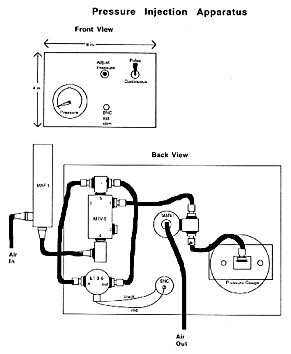

CHAPTER 5 - CELLULAR METHODS
(Source: R. Warga and C. Kimmel)
This protocol provides methods for labeling blastomeres with tracer dyes and observing their clonal progeny in live or fixed whole-mounted embryos.
Labels
Dissolve the dyes in 0.2 M KCl (at the concentrations specified below) and centrifuge through a 20 µm pore filter before filling the pipettes.
Tetramethyl-rhodamine Dextran (10,000MW, neutral: Molecular Probes) make a 5% solution. This is the standard dye used for fate mapping and lineage tracing.
Fluorescein-isothiocyanate Dextran (10,000MW, neutral: Sigma or Molecular Probes) make a 5% solution. This dye is not particularly good for repeated observations. It fades quickly, and causes substantial photodamage to the cells during long exposures to fluorescent light. Another disadvantage is that the embryo itself, particularly the yolk, has considerable autofluorescence at the wavelengths used to view fluorescein.
BiotinDextran (10,000MW, lysine fixable: Molecular Probes) make a 3% solution. This dye is used as a fixable tracer, and can be included in the injection pipette along with the rhodamine dextran if permanent preparations are desired.
Dye-filling the microinjection pipettes:
Make micropipettes from thin-walled Borosillicate capillary tubing, with the rapid fill glass fiber (e.g. Frederic Hear Inc. or Sutter Glass). Pull a rather steep taper and a very sharp tip on the injection pipettes with a standard puller (e.g. a Flaming Brown programmable horizontal micropipette puller). When determining the settings, check the point under a compound microscope at about 400x; it should be so sharp that the taper seems to disappear to nothing. Later this tip will be broken off, and the taper largely will determine what the size of the tip will be after breaking it. Backfill the injection pipette tips by placing a drop of the dye solution on their butt ends. The fiber inside the pipette allows the dye to run up to the tips, where it accumulates. Generally bubbles are present, but many will gradually disappear. Hence, the pipettes can be filled the day before use, and stored in a refrigerator in a humidified container.
The injection rig:
Standard methods borrowed from electrophysiologists are used to label cells. The basic setup includes a stimulator, an intracellular amplifier, and an oscilloscope, and you can learn how to hook the boxes together from a cooperative physiologist if you don't know how to do these things. An audio monitor for hearing the voltage is also very useful. The holder for the injection pipette is mounted on a micromanipulator (e.g. a Leitz manipulator, which gives lovely control and stability, and a hydraulic advance fitted in front of it, permitting very fine control of axial excursions of the pipette). For blastomere injections, a relatively inexpensive Nomarski microscope with 10x and 20x objectives can be used. Even though the lenses are corrected for a coverslip, the optics are adequate without. The working distance for either objective is sufficient to position the injection pipette underneath, if you mount it with the manipulator so that the pipette comes in at a shallow angle, about 20° from the horizontal, just clearing the microscope stage. To position the pipette near the cell of interest use both the manipulator and microscope stage controls.
The holder for the injection pipette (WPI, Inc.) permits recording, passing current, and dye injection by pressure. The pressure can be regulated with a commercial unit (e.g. General Valve, Corp.) or with a simple system built from individual parts. It is important to regulate the pressure both up and down agreeably and without hysteresis, while the pipette tip is inside the cell. A simple system is diagrammed in the accompanying Figure, and constructed from the following parts:
PRESSURE INJECTION APPARATUS
Vendor:
Air Component Specialties,Inc
10347 S.E. Division
Portland, OR 97266
(503) 257-9848
Manufacturer:
Clippard Instrument Lab, Inc.
7390 Colerain Road
Cincinnati, Ohio 45239
(513) 521-4261
Item #; Description; Quantity; Price
3814-1; Vinyl hose (cl); 50 ft; $ 6.90
MAF-1; Air filter; 1 ea; 8.90
12145; Filter element; 1 ea; 3.95
11752-3; Hose fittings; 1 pkg/10; 2.90
11924-1; Pipe to hose fittings; 1 pkg/10; 3.20
MAR-1; Air regulator; 1 ea; 8.55
MTV-5; Control valve; 1 ea; 11.55
PG-100; Pressure Gauge; 1 ea; 8.15
ET-3-6; Electronic valve; 1 ea; 17.15
5000-2; Hose clamp; 1 pkg/10; 1.10
15002-2; L fittings; 1 pkg/10; 4.90
15002-3; T fittings; 1 pkg/10; 4.90
11755; Screw plug; 1 pkg/10; 1.20
11761-2; Gaskets 1 pkg/25; 0.40
TOTAL $ 83.75

The "air in" in this system can come from an in house supply of air, but a nitrogen or compressed air tank can provide higher pressures. The "air out" goes directly to the pipette. Just before use, backfill the pipette (i.e. from its butt end) with 0.2 M KCl applied behind the dye solution. You can buy a long thin syringe needle for this purpose (Hamilton) or pull out a suitably long capillary from a Pasteur pipette. Mount the pipette on the holder. With another manipulator, advance a glass rod firepolished at the end to produce a ball about 3 mm in diameter. This ball is used to break the point of the pipette by gently advancing it against the ball, under the 20x objective. After breaking you will be able to see that the end is just a bit blunt. A good pipette for injection, even in the small blastomeres of a late blastula, will have a resistance of about 80 megohms, as measured in a bath of embryo medium. The bath is grounded by an agar-bridged silver-silver chloride ground wire.
Plate silver wires electrolytically with chloride or dip into molten silver chloride. (Dipped wires last longer than plated wires.) Insert the silver chloride ground wire into a 15 cm length, small diameter PE tube filled with 3% agar in embryo medium; this is the agar bridge. The ground wire should insert only about halfway into the agar. Seal the agar bridge to the ground wire with epoxy and heat shrink tubing. Store in the refrigerator with the tubing immersed in embryo medium.
Preparing the Embryos
Collected the embryos about an hour after fertilization, stage, and clean. Under a stereo dissection microscope, remove the chorions with fine sharpened watchmakers forceps (Dumont no. 5) by gently teasing open a hole in the chorion, widening it sufficiently and carefully shaking out the embryo (see Removing Embryos from their Chorions, Chapter 4, for more details). This is done in embryo medium, in agar-coated petri dishes (2% Difco Bactoagar). Once the embryos are free of the chorion, transfer with a fire polished pipette through several rinses in embryo medium to a clean agar dish.
Using both embryo medium and agar dishes greatly improves survival during and following dechorionation. Embryo medium contains elevated Ca2+ which helps to keep the cells intact, and the agar provides a smooth nonsticky surface for the embryos to sit. If you put a dechorionated embryo at cleavage or blastula stage directly on the plastic surface of a dish, and carry the dish around, you may end up with fragments or a dissociated suspension of dead cells. After the injection, return the embryos to agar dishes for incubation, unless they are to be viewed immediately.
For the injection, mount the embryo in a depression slide in a drop of embryo medium, or if you need to orient it in a position in which it won't lie still, use 3% methylcellulose in embryo medium (see Methyl Cellulose Mounting, Chapter 4).
Labeling the embryos
Use current injection to drive the electrode through the cell membrane. Blastomeres take an unusually high amount of negative current, driven by as much as 14 V with a duration of about 50 msec. This method is vastly preferable to manually advancing the tip through the membrane or wiggling it through by capacitance "ringing". Under visual control (20 x objective) advance the electrode against the cell of interest until you can see it dimple the cell surface. Then give it a blast of current and it should penetrate. You often see the dimple disappear, and if you are monitoring voltage through the injection pipette you will see a negative 30 mV or so (as high as -70 mV) resting potential. If you have damaged the cell, or if the electrode has passed completely through the cell into the small amount of extracellular space within the blastoderm, you will observe a positive change, not a negative one. Deep cells can be penetrated by very prominently dimpling an EVL cell that has a deep cell positioned just beneath it. After the current injection, the pipette will have usually advanced through the thin EVL cell and into the underlying deep one.
Expel dye through the pipette by applying positive pressure, to lightly color the cell. You can monitor the dye injection on a rig that is not equipped with fluorescence optics simply by watching the amount of color in the blastomere under Nomarski. The dye should diffuse throughout the whole cell, not brightly label a small dot-like inclusion within the cell. If you can see the color easily with your eyes, you may have filled the cell too brightly. You should not notice a volume change in the cell nor any evidence of damage (e.g. leaking cytoplasm) as you withdraw the pipette from the cell. Generally you need fill the cell for only a few seconds.
If you are doing a clonal analysis and want to be sure that only a single cell is labeled, you need to look at the embryo immediately after the injection with fluorescence optics and image intensification. There is no other way to be certain that dye has not spuriously labeled neighboring cells.
Single looks at the clone
For a short-duration look at the labeled cells, as you might do in a fate mapping experiment, mount embryos in 3% methyl cellulose on a glass depression slide by gently inserting the embryo into a drop of methyl cellulose or by laying it on top of the gel, depending on how much methyl cellulose you wish to use. Carefully orient the embryo using a nylon hair loop. Add a thin film of embryo medium to cover the drop of methyl cellulose, and view it with no coverslip. (See Methyl Cellulose Mounting, Chapter 4, for more details.)
Screen the clones with the aid of an image intensifying camera (e.g. Videoscope) mounted on a compound microscope. With signal intensification, one can detect very lightly labeled cells, using very low levels of exciting light, thereby avoiding photodamage to the labeled cells. This is particularly important if you are going to view them repeatedly. The camera output is sent directly to a video display monitor and also can be stored on a variety of storage devices, (e.g. a computer hard disk, an optical disk, or a VCR).
Time lapse
The essential equipment for time lapse recording is the same as for single looks, with some additions. Minimally a shutter and shutter controller are required for the fluorescence light source and a computer (or stimulator) to synchronize the timing of the shutters with storage of the image onto the storage device. It is nice to have a similar control for the white light source. The computer can also control the fine focus control of the microscope, and take 4-d video movies of the clone at multiple focal planes. Additionally, the computer can control movement of the microscope stage, for X,Y excursion. An easy reliable system includes a MacII with a QuickCapture board running software to average and sometimes enhance images before storing them on a Panasonic OMDR. The software was written by Paul Z. Myers and is available commercially as "Axovideo" by Axon Instruments.
For time lapse analysis, mount embryos in 0.1% agarose (dissolved in embryo medium) inside of a viewing chamber (see Viewing chambers, Chapter 4) with 3 spacers in between. Pipette the embryo directly into a test tube containing several ml of warm agarose using a fire polished pipette, then pipette the embryo along with a small volume of agarose directly onto the bridged viewing chamber. Orient the embryo with a nylon hairloop before coverslipping, the agarose will harden slowly and will never completely gel, but the coverslip will help immobilize the embryo in the desired position. Seal the chamber with vaseline to keep it from drying. Animals develop normally, albeit a little more slowly than normal in these chambers, and can be left as long as 24 hours. (If a firmer agarose is used, the embryo will not develop normally for such a long time.) To remove an embryo from a bridged coverslip chamber, immerse the chamber in a large volume of embryo medium and gently pry apart the two large coverslips. If done gently, the embryo should pop out of the agarose and fall onto the bottom of the dish.
The Zebrafish Book